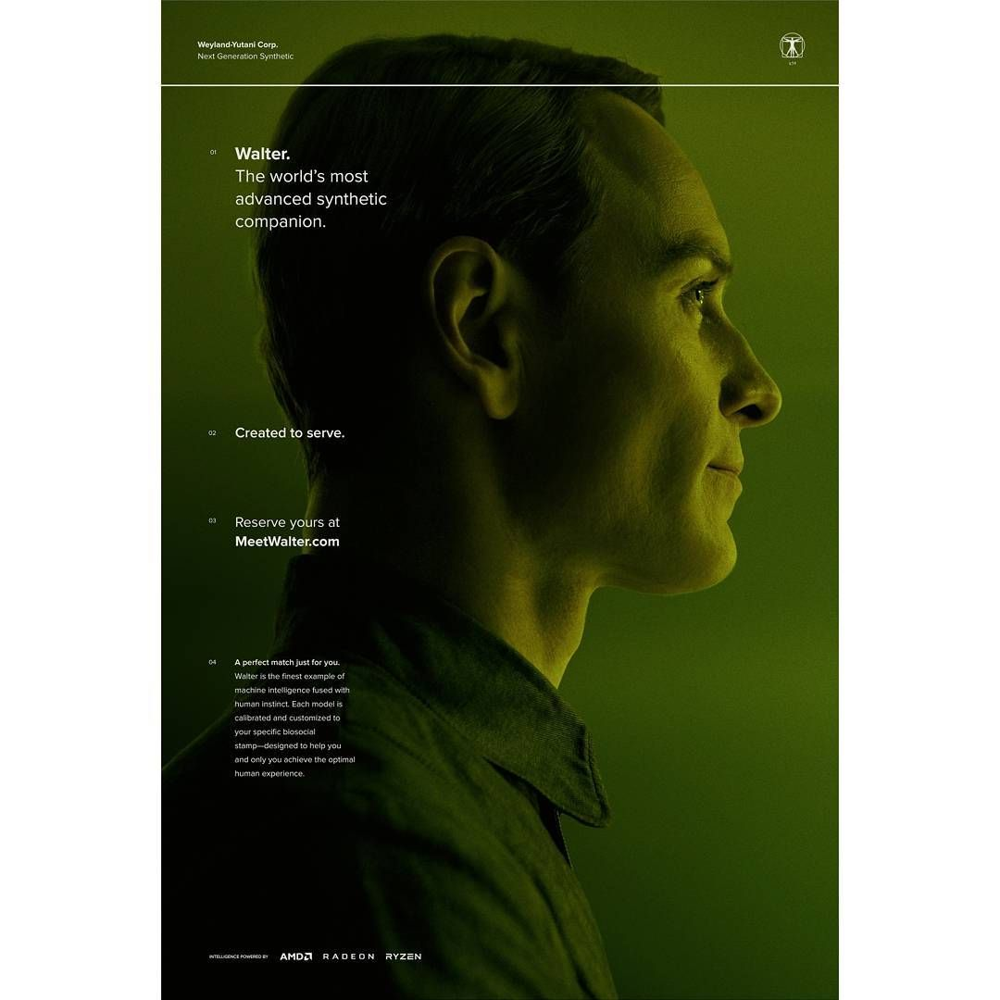
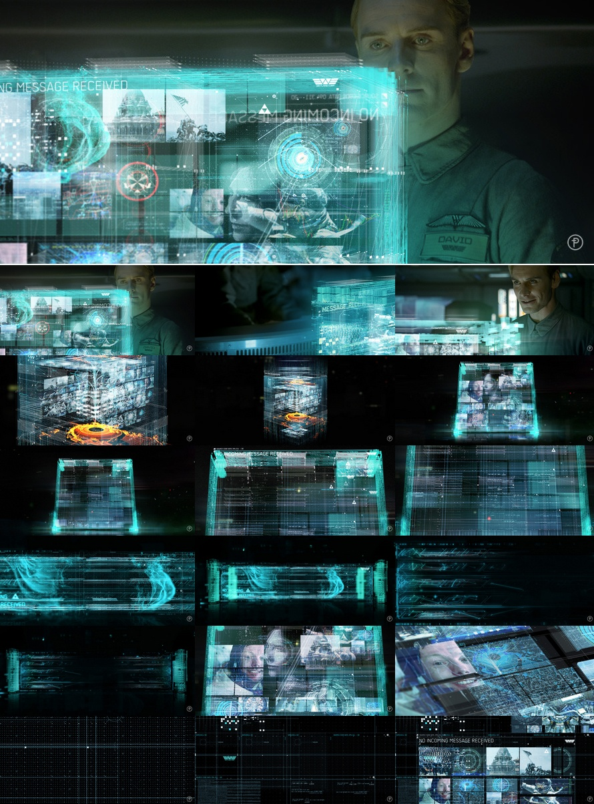
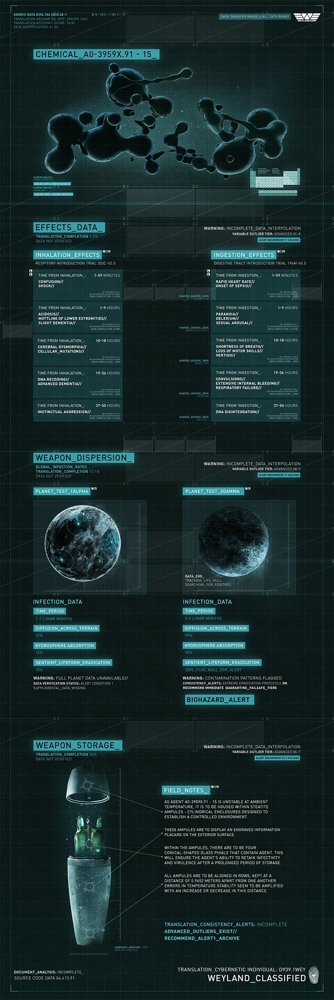
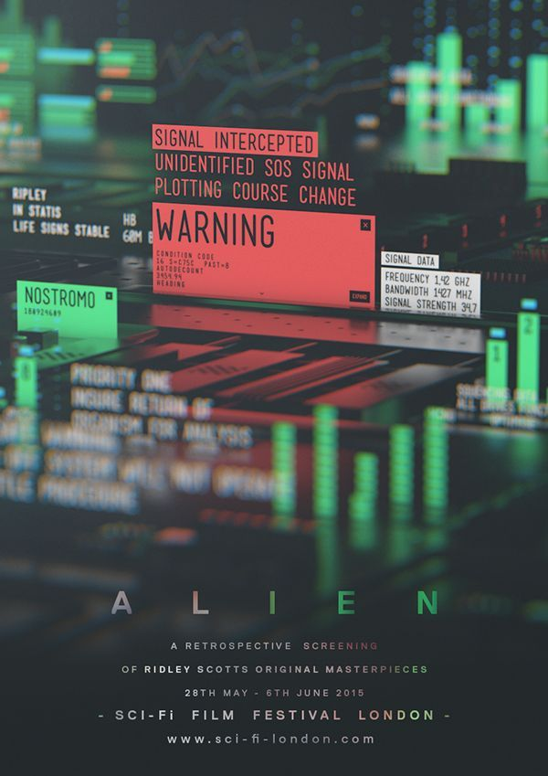
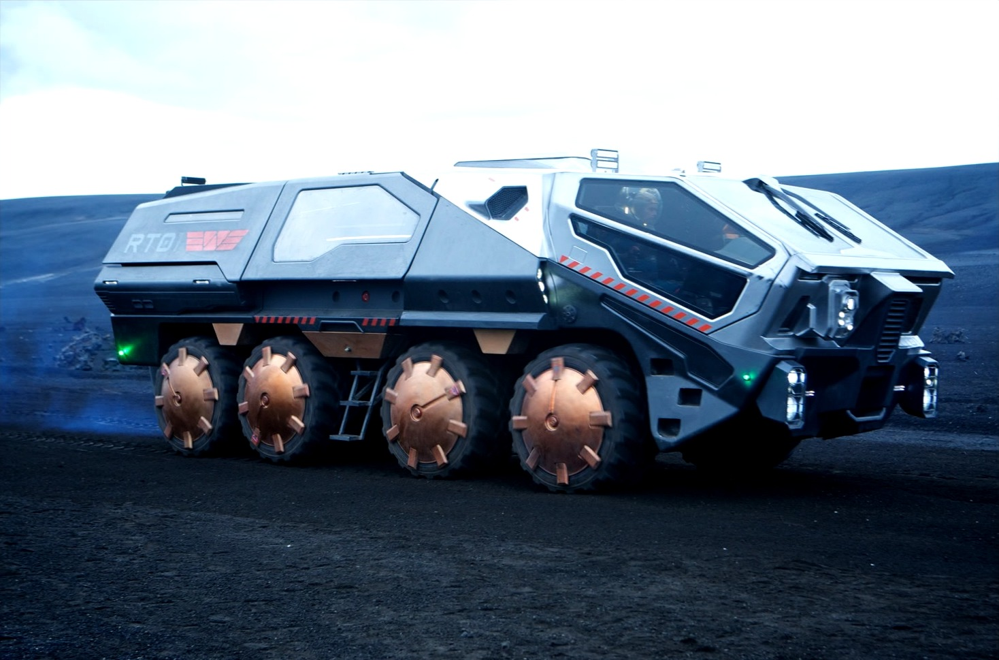
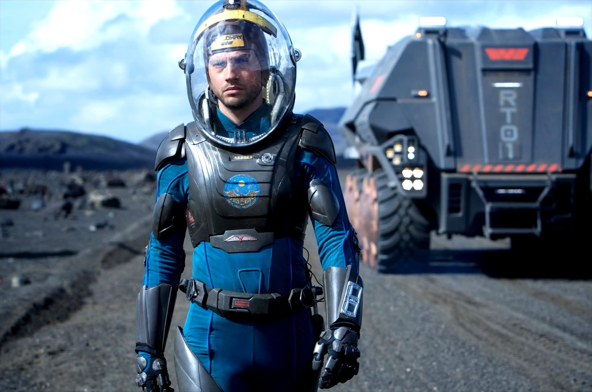
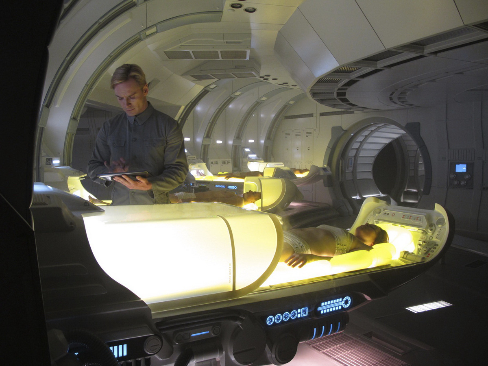
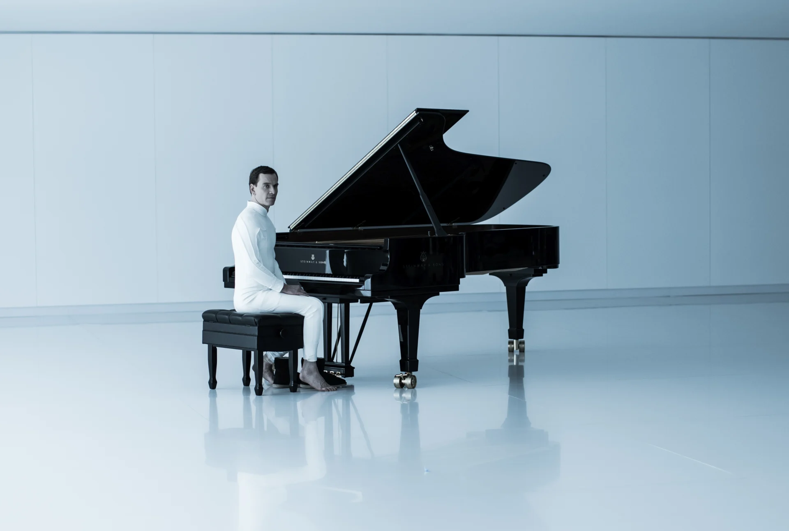
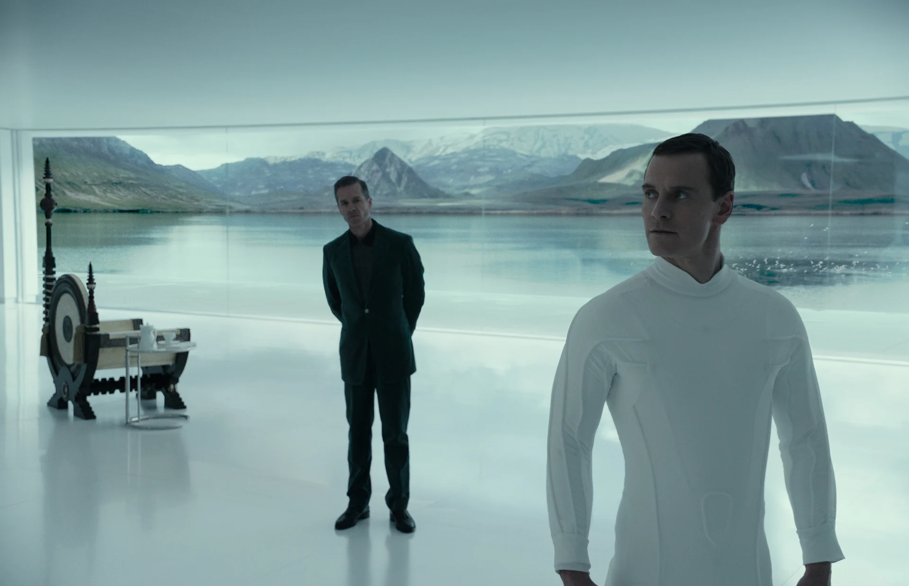
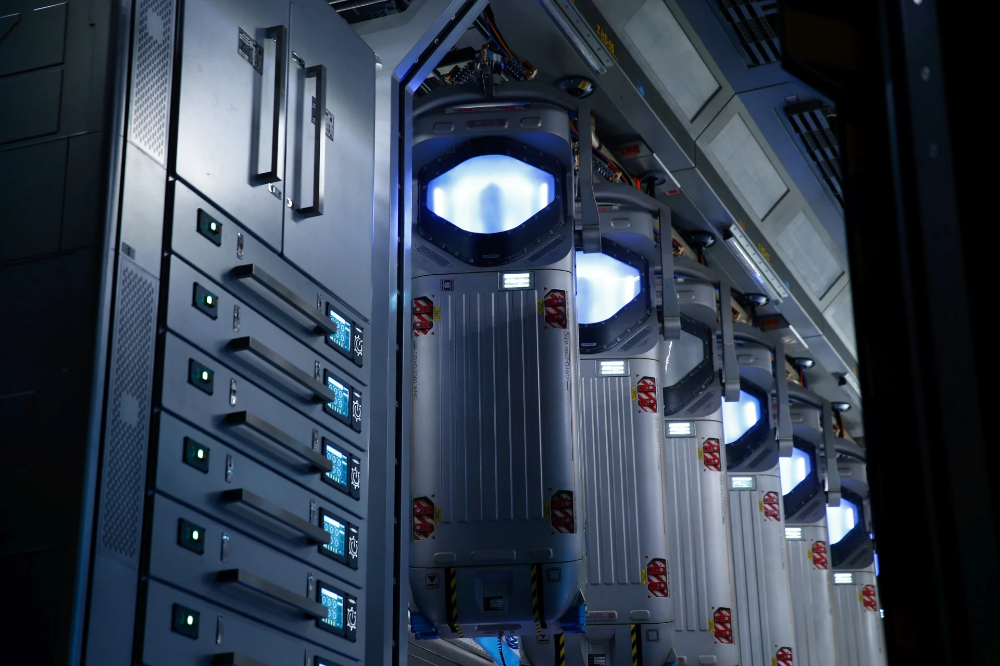

Founder / permanent chair
Peter Weyland
Legacy vision portfolio anchored by Prometheus expedition, longevity research and extraterrestrial origin claims.
Consolidated Prometheus-era investor record covering synthetic labor, off-world transit, terraforming systems, colonial logistics, restricted exoplanet research, and legacy mineral extraction. Operating authority reflects Meredith Vickers during mission review and David 8 synthetic interpretation logs.




Legacy vision portfolio anchored by Prometheus expedition, longevity research and extraterrestrial origin claims.
Operational cost discipline, mission containment authority and human-risk control during deep-space expenditure review.
Language bridge, specimen handling, crew monitoring and autonomous archive translation under founder directive.
Commercial towing and ore refinery networks retained as long-duration mining assets within outer-system logistics.
| Ticker | Counterparty | Lane | Exposure | Movement | Operational note |
|---|---|---|---|---|---|
| WYC | Weyland-Yutani Corp. | Parent holdings | $624.0B | +18.4% | Prometheus and synthetic licensing are consolidated. |
| TYR | Tyrell Corporation | Replicant cognition | $82.4B | +9.1% | Biomorphic cognition licensing. |
| WLC | Wallace Corporation | Agricultural biofoundry | $74.8B | +11.6% | Food and synthetic supply lines. |
| KO | Coca-Cola Company | Consumer stabilizers | $38.2B | +2.8% | Colony retail channels. |
| PAA | Pan Am Systems | Orbital passenger transfer | $27.9B | -1.2% | Civilian transfer contracts softened. |
| ATA | Atari Systems | Interface hardware | $19.6B | +4.5% | Embedded terminal hardware. |
| NOST | Nostromo Haulage Pool | Ore towage | $41.7B | +7.7% | Outer-system mining carriage. |
| HYP | Hyperdyne Systems | Android substrate | $55.1B | +12.2% | Synthetic platform dependency. |
| SEV | Seegson Industrial | Low-cost automation | $14.3B | +0.8% | Utility robotics only. |
| TRQ | Terraforma Q | Atmosphere processing | $91.5B | +15.0% | Colony buildout exposure. |
| BLD | Blue Sun Logistics | Civil freight | $33.6B | +3.4% | Colonial provisioning routes. |
| ORE | Ore Basin Authority | Mineral extraction | $106.8B | +6.9% | Mining operations retained. |
Sample A0-3959X.91-15 is unstable at ambient temperature. It must be held in static ampules until dispersal. All ampules are aligned in rows and kept at 0.9652 meters apart from one another. Any amplification requires a controlled distance change.

Planet test alpha / RT01 surface unit
Planet test gamma / personnel exposure lane Vickers operational command
Vickers operational command
Automated medical platform reserve
David behavioral calibration / cultural library
Founder suite / synthetic continuity
Cryogenic logistics / crew storage reserve